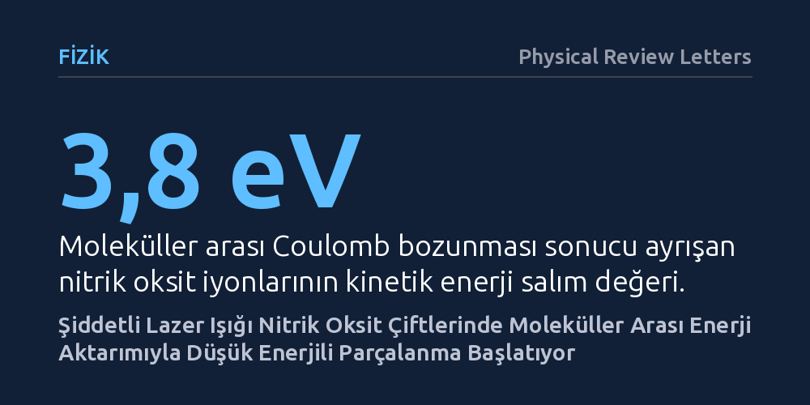

FIZIK · Physical Review Letters · 2026-10-14
Araştırmacılar, şiddetli femtosaniye lazer darbelerine maruz bırakılan nitrik oksit molekül çiftlerinin parçalanma davranışını inceledi. Lazer alanının uyardığı özel bir durum sayesinde moleküller arasında enerji aktarımı gerçekleştiği ve sistemin beklenenden daha düşük enerjide parçalandığı saptandı.
Moleküllerin aşırı şiddetli ışık altında sadece doğrudan patlamadığını, komşularıyla enerji paylaşarak beklenmedik kanallardan da ayrılabileceğini ve bu sürecin lazerle kontrol edilebileceğini gösterir.

Birbirine zayıf kuvvetlerle bağlı iki molekül aşırı şiddetli bir lazer darbesine maruz kaldığında ne olur? Genel beklenti, moleküllerin elektronlarını hızla kaybederek artı yükle yüklenmesi ve aynı yüklerin birbirini itmesi sonucu ani bir patlama yaşamasıdır. Ancak moleküllerin bu tür aşırı koşullarda enerjiyi birbirleriyle nasıl paylaştığı sorusu uzun süredir tam olarak aydınlatılamamıştı.
Bu sorunun cevabı yalnızca temel moleküler fizik açısından değil; atmosfer kimyası, radyasyon hasarının moleküler düzeyde anlaşılması ve kimyasal bağların ışıkla yönlendirilmesi açısından da önem taşır. Komşu moleküller arasında ultra hızlı enerji transferi kanallarının nasıl açıldığını anlamak, moleküler süreçleri dışarıdan yönetebilmenin önünü açar.
Araştırmacılar, nitrik oksit molekül çiftlerini saniyenin katrilyonda biri kadar kısa süren femtosaniye lazer darbeleriyle etkileşime soktu. Deneyde yalnızca tek renkli lazerler değil; 800 ve 400 nanometre dalga boyundaki iki lazer darbesinin uzay ve zamanda hassas biçimde üst üste bindirildiği iki renkli bir lazer alanı da kullanıldı.
Lazer etkisiyle parçalanan moleküllerden saçılan iyonların kinetik enerji salımları ölçüldü. Gözlemlenen mekanizmanın gerçekten güçlü lazer alanına özgü olup olmadığını denetlemek amacıyla aynı moleküller elektron çarpışmalı iyonlaşmaya da tabi tutuldu ve elde edilen deneysel spektrumlar ilk ilkeler kuantum kimya hesaplamalarıyla modellendi.
Doğrudan gerçekleşen geleneksel patlama sürecinde iki iyonun 5,6 elektronvolt kinetik enerjiyle birbirinden fırladığı bilinmektedir. Ancak araştırmacılar lazer deneyinde 3,8 elektronvolt civarında belirgin ve tamamen ayrı bir enerji izi tespit etti. Dikkat çekici şekilde bu sinyal, elektron çarpışmalı iyonlaşma deneylerinde hiç ortaya çıkmadı.
Kuantum kimyasal modellemeler bu düşük enerjili izin ardındaki süreci netleştirdi: Şiddetli lazer alanı, molekül çiftini doğrudan iyonize etmek yerine uyarılmış özel bir ara duruma taşıyor. Bu durumdayken iki molekül arasındaki mesafe bir miktar açılıyor; ardından bir moleküldeki aşırı uyarılma enerjisi komşu moleküle aktarılarak moleküller arası Coulomb bozunması gerçekleşiyor. İyonlar birbirinden daha uzak mesafede oluştukları için birbirlerini daha zayıf bir kuvvetle itiyor ve 3,8 elektronvolt gibi beklenenden düşük bir kinetik enerjiyle ayrışıyor.
Çalışmanın en dikkat çekici bulgularından biri, 800 ve 400 nanometrelik lazer atımlarının birlikte uygulanmasıyla moleküller arası Coulomb bozunması veriminin rezonans etkisiyle belirgin bir artış göstermesidir. Bu sonuç, moleküller arasındaki yerel olmayan enerji aktarımının ve parçalanma yollarının lazer parametreleriyle hassas şekilde yönlendirilebileceğini ortaya koyar.
Araştırma, moleküler sistemlerin aşırı enerjiye maruz kaldığında enerjiyi yalnızca kendi içlerinde tüketmek yerine komşularıyla paylaşarak beklenmedik bozunma yolları izleyebileceğini göstermektedir. Bu mekanizmanın aydınlatılması, yoğun ışık veya radyasyon altındaki moleküler çevrelerde hasar oluşumunu ve kimyasal dinamikleri anlamak için sağlam bir zemin sunmaktadır.